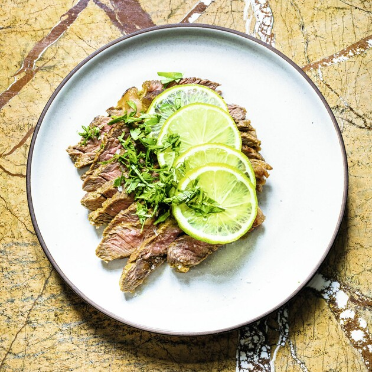

Carne Asada

Description
Marinate and grill beef, slice it thinly, then serve warm with tortillas, avocados, and pico de gallo.
Use skirt steak or flank steak for the best carne asada.
Great for carne asada tacos!
Ingredients
- 1 1/2 to 2 pounds flank or skirt steak
- 1/3 cup extra virgin olive oil
- 1/4 cup soy sauce
- 2 tablespoons lime juice
- 2 tablespoons cider vinegar
- 2 tablespoons sugar
- 1 teaspoon freshly ground black pepper
- 1 teaspoon ground cumin
- 4 garlic cloves, minced
Steps:
- Marinate the steak
- Preheat the grill
- Sear the steak
- Slice the steak across the grain
- (Optional) Serve with grilled tortillas
Bon apetit!